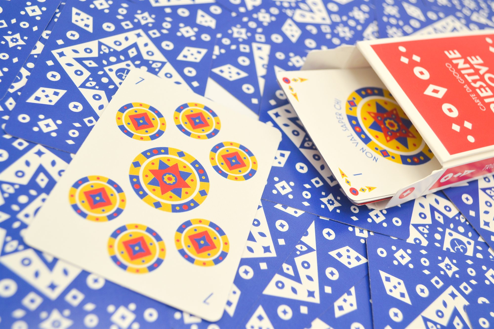
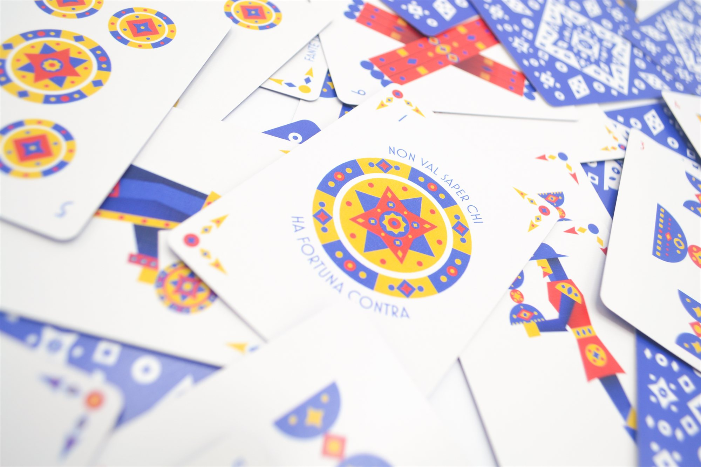
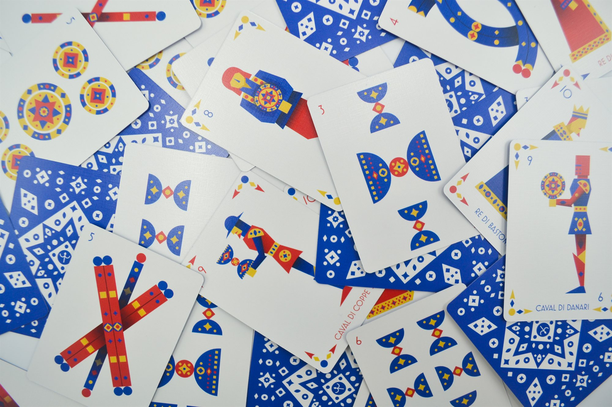
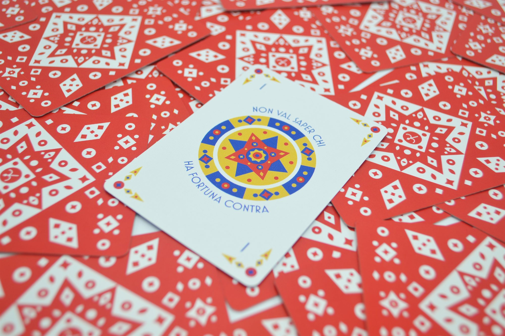
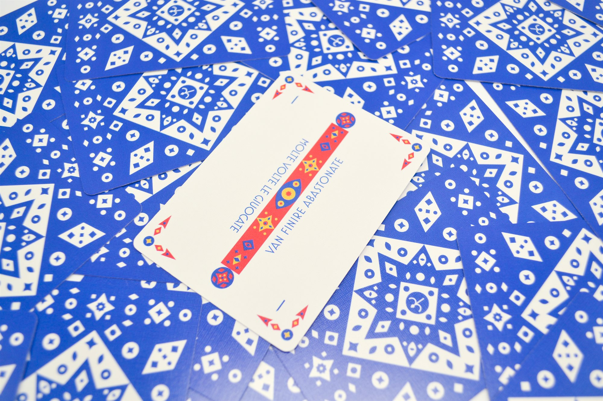
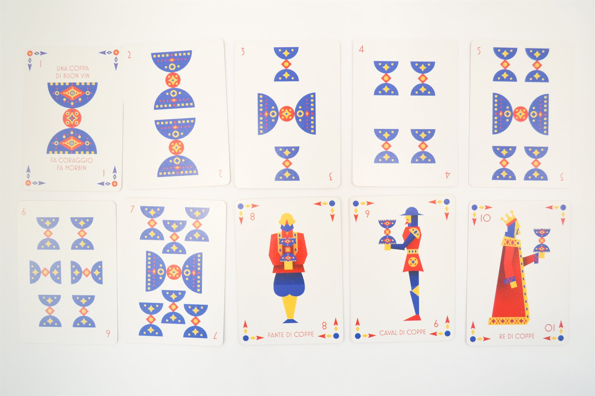
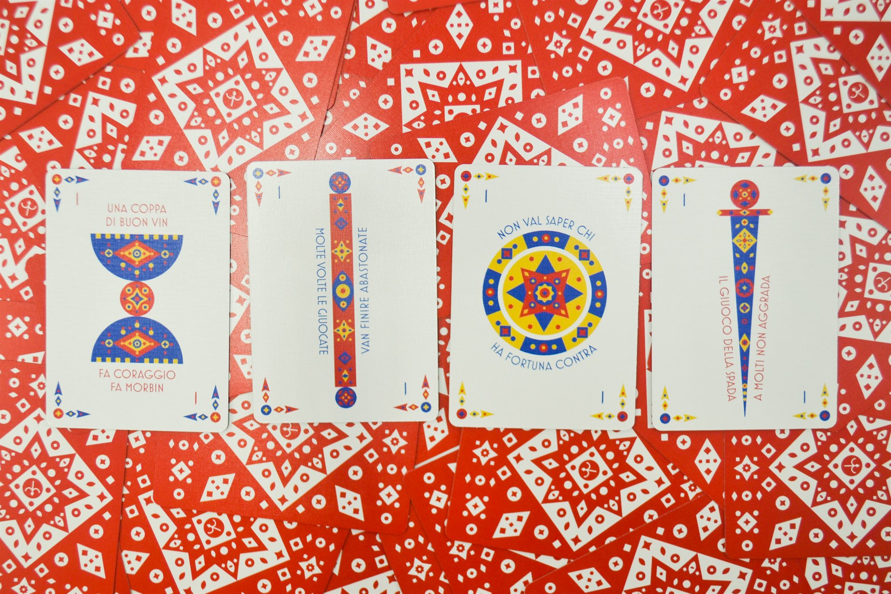
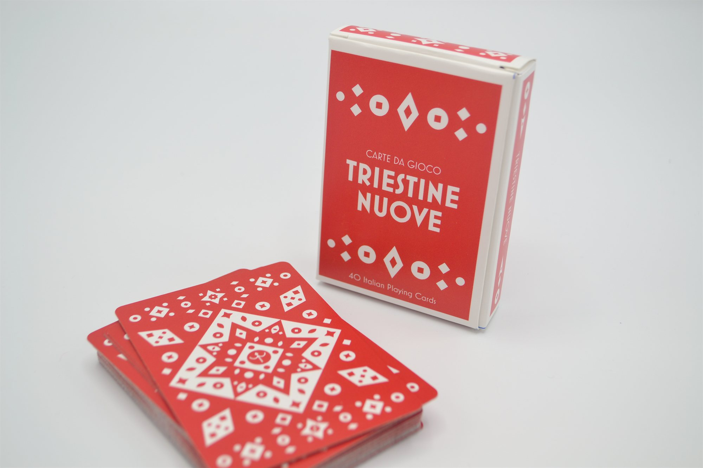

Carte Triestine
An updated design of Trieste's regional Italian playing cards, made and sold with classmates through an online pop-up shop.
Overview
Playing cards in Italy are different than the decks Americans are used to. They are used for hundreds of games throughout the country, and each region has a unique design. This is an update of the design from the region of Trieste.

A sellout
I made and sold these as part of an online pop-up shop with my classmates, with the goal of sharing popular Italian games with people here in the States. Each box contained a deck of 40 cards (split into 4 suits, with 10 cards per suit), instructions and variations on 3 games, and a bit of playing card history. The cards were a success, and sold out within a few days.






